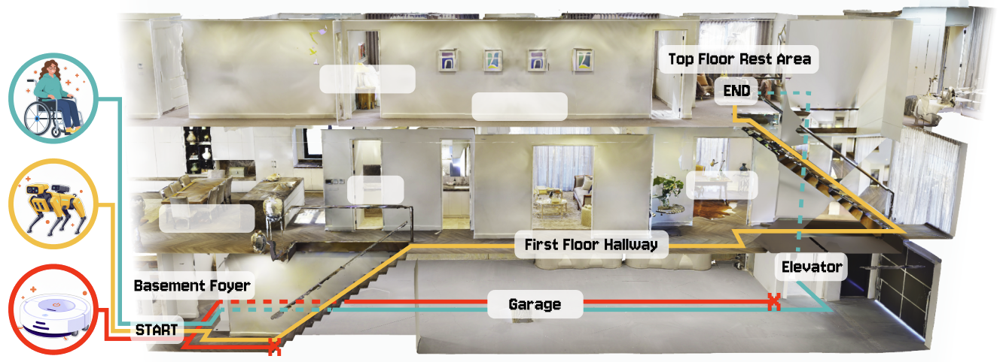
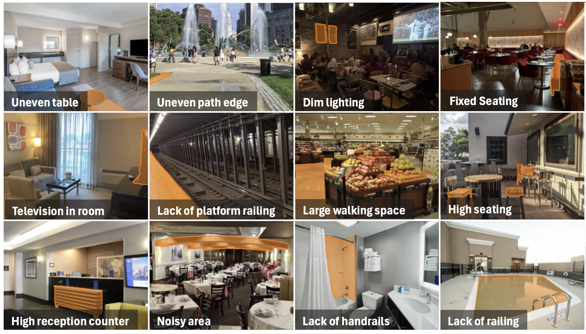
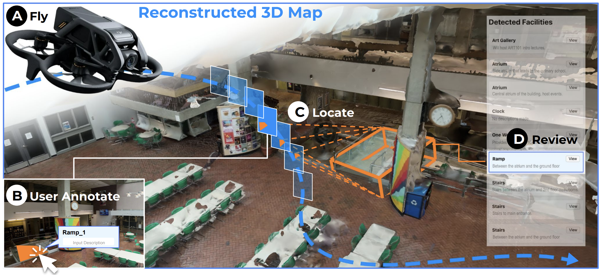
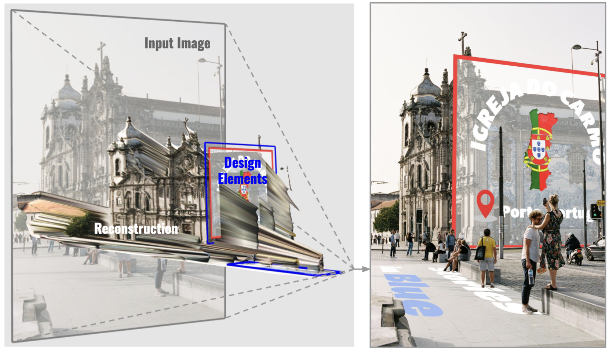
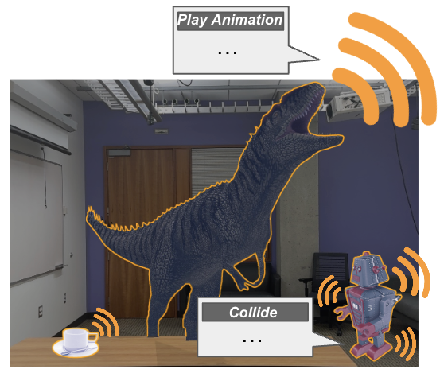

SPATIAL REASONING
CVPR 2026Vision-language models · Evaluation
CapNav
Can an AI understand where you can go?
A benchmark for capability-conditioned indoor navigation: evaluating whether vision-language models reason about routes in relation to an agent’s physical capabilities.
Benchmarking Vision Language Models on Capability-conditioned Indoor Navigation

PERSONALIZED ACCESSIBILITY▷ Watch film
UIST 2025Vision-language models · Accessibility
Accessibility Scout
Accessibility starts with the person.
Personalized scans of built environments, connecting visual observations to an individual’s accessibility needs.
Personalized Accessibility Scans of Built Environments

HUMAN–AI COLLABORATION▷ Watch film
UIST 20253D mapping · Human–AI interaction
FlyMeThrough
A map is more than its geometry.
Human–AI collaborative indoor mapping with commodity drones, bringing human knowledge into reconstructed 3D spaces.
Human-AI Collaborative 3D Indoor Mapping with Commodity Drones
 SITUATIONAL AWARENESS▷ Watch film
SITUATIONAL AWARENESS▷ Watch film
CHI 2024Augmented reality · Accessibility
RASSAR
Make barriers visible. Make spaces better.
An augmented reality tool for scanning rooms and identifying potential accessibility and safety issues in the built environment.
Room Accessibility and Safety Scanning in Augmented Reality

SPATIAL AUTHORING▷ Watch film
DIS 2026AI-assisted design · Geometry
DepthScape
Turn visual understanding into creative control.
A design workflow that combines depth estimation, semantic understanding, and geometry extraction to author 2.5D designs.
Authoring 2.5D Designs via Depth Estimation, Semantic Understanding, and Geometry Extraction

CONTEXT-AWARE INTERACTION▷ Watch film
UIST 2024Generative AI · Augmented reality
SonifyAR
What should an augmented world sound like?
Context-aware sound generation that connects virtual interactions with the real-world environments in which they take place.
Context-aware Sound Generation in Augmented Reality